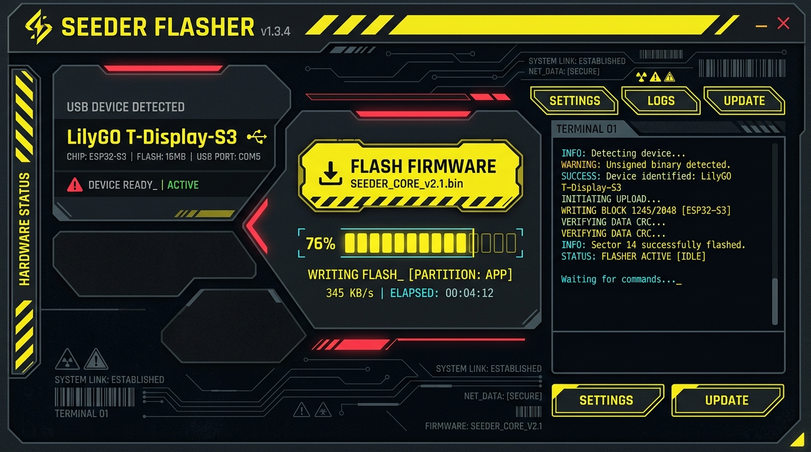
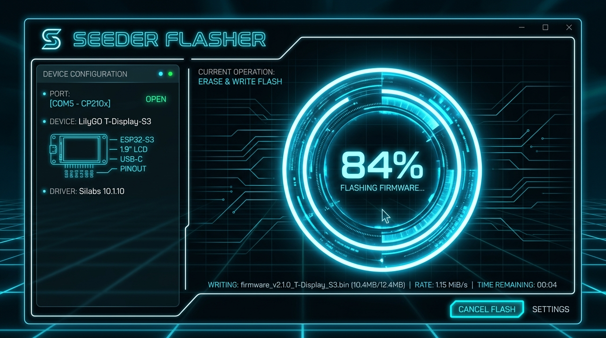
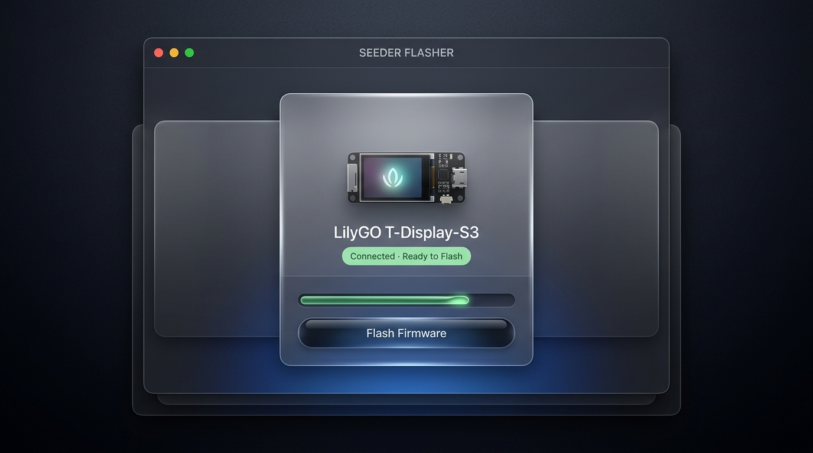

Three curated visual architectures for the standalone LilyGO USB flashing executable.

High-contrast tactical netrunner HUD with pitch black textured carbon, aggressive canary yellow hazard stripes, and monospace telemetry readouts.

Pure digital grid aesthetic featuring sleek obsidian glass, razor-thin luminescent ice blue circuits, and an animated concentric identity disc progress meter.

Ultra-refined liquid glass frosted acrylic with specular edge highlights, soft diffused shadows, and pristine San Francisco typography.